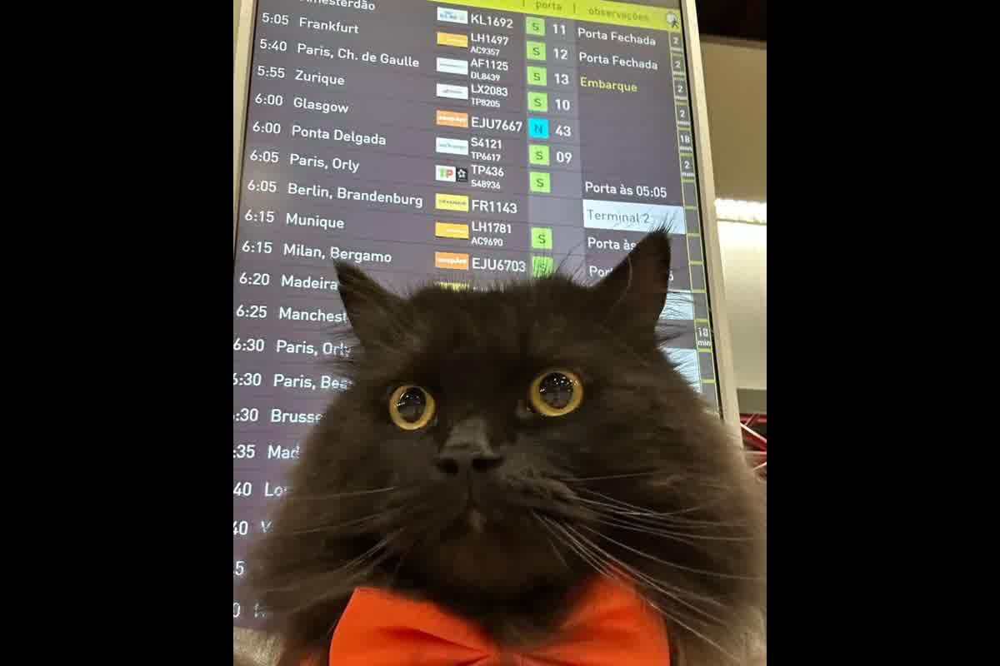
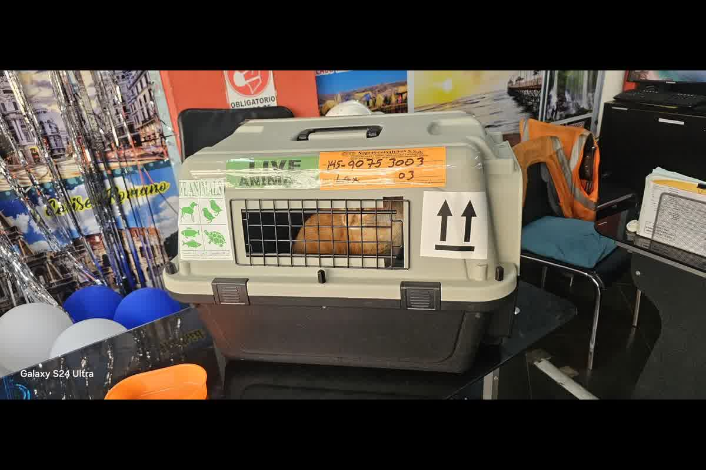

How to take your cat to the United States from Peru in 2026: what federal income requires, what states and airlines may require, and how to prepare the exit file with SENASA.

Taking a cat from Peru to the United States is considerably simpler than a dog: cats are not subject to the CDC dog-import rule and do not need a serology titer (RNATT/FAVN). The cat must arrive looking healthy; rabies vaccination is not federally required for cats, though it is strongly recommended and may be required by the destination state or the airline. In practice the essentials are the ISO microchip, the veterinary health certificate, the SENASA zoosanitary certificate to leave Peru, and meeting the airline's policy. Always check the destination state's requirements.
Entry of cats into the United States often fails for a different reason than what people imagine. The federal government does not require the same health package that it requires for dogs, but the trip can still be blocked by a cat with clinical signs, by a certificate issued outside the window or by state rules that no one reviewed when putting together the itinerary. The case is resolved when the file is built with control criteria, not like a folder of loose papers.
In consultation in Trujillo I receive owners who come with a mistaken idea: “they don't ask for anything for cats.” In 2026 the reality continues to be more nuanced. At the federal level, the focus is on public health and inspection at the point of entry. In parallel, some states and territories have their own conditions, and airlines often require a clinical certificate with strict dates. That defines how it is planned from Peru.
The United States does not require, at the federal level, a rabies certificate for the entry of cats in most situations. The data is published by the CDC and is maintained in its animal import guide: the cat can enter without proof of rabies vaccination compliant with international movement regulations, although the CDC itself recommends that cats be vaccinated. This difference between “not required” and “recommended” changes the clinical management of the case, because the trip is not decided only by the form, it is decided by border control.
The operative point is the inspection. The cat is visually checked upon arrival and may be retained if it shows signs compatible with a disease of public health interest. When the animal arrives sick, the control may require a veterinary evaluation and this evaluation occurs at the owner's expense and without the peace of mind that entry will be authorized on the same day. It's not about scaring; It is about understanding that the federal filter is not a checklist, it is a health control.
The other federal detail is on the agricultural and wildlife side. APHIS has published that, for pet cats, it does not have specific health requirements for importation from abroad. This framework reduces procedures, but does not eliminate customs inspections or disease controls. The real preparation is arriving with a cat that is clinically stable, transported safely, and has a documentable history if the officer requests it.

The most expensive mistake is assuming that “the United States” is a single regulation. Two places break that simplification: Hawaii and Guam. The CDC puts it bluntly: Even a cat traveling from the mainland can be subject to local quarantine. If the final destination is Hawaii, planning stops being “federal entry” and becomes a territorial protocol with its own times and steps.
In the rest of the country, state rules may require proof of rabies or a veterinary inspection certificate for certain movements. In consultation, the typical case occurs when the owner arrives in a state that requests documentation to register the animal, for housing or for municipal procedures, and realizes at destination that he has no way to prove vaccination or recent examination. The airport will not always ask for it; The problem appears later, when the cat is already in the place where it will live.
The correct way to plan is to decide final destination and internal route before issuing certificates. A flight to Miami is not equivalent to a move to Hawaii, even if the ticket says “USA.” In Peru, when this information is defined late, the owner ends up reissuing documents at the last minute from Lima or adjusting the travel date.
The clinical certificate is not a uniform federal requirement for cats, but it is the most requested document by transporters. Most airlines require a health certificate issued within a short window, with a recent clinical examination and a veterinarian's signature. The deadline changes depending on the carrier, and that is why at Zoovet Travel we do not use “generic” dates: it is scheduled based on the actual itinerary.
The problem with that document is not its content, it is its validity. A certificate issued too early expires before boarding. A certificate issued too close leaves no room if the cat presents a clinical finding that requires reevaluation. In Trujillo, the mistake I see the most is asking for the certificate before having the final date of the flight confirmed, and then discovering that the document is no longer valid on the day of check-in.
For the complete technical foundation, you can read Health certificate for international travel: what it evaluates and when it is issued in our Technical Series. That article details what is evaluated in the exam, what is declared in the certificate and why the issuance window exists from the logic of health control.
The Peruvian section defines whether the trip goes in an orderly manner. For export, the usual circuit includes clinical examination, vaccination endorsement and issuance of the export health certificate with official official official endorsement by SENASA (Peruvian National Agrarian Health Service) (Peruvian National Agrarian Health Service) (Peruvian National Agrarian Health Service). The objective of the endorsement is to validate that the document has traceability and that the animal evaluated is the one traveling. In cats, identification can be done with a microchip, and although the United States does not require it for entry, it helps maintain documentary consistency in case of loss, re-identification or data crossing.
Rabies in cats enters through a different channel than in dogs in the United States. It does not appear as a federal requirement, but it does appear as a practical requirement in states, housing, clinics and insurance. In cases of moving, a cat without a documented vaccine is exposed to restrictions at destination if an incident occurs due to a bite or contact with local fauna. That scenario is best handled when the history is complete from Peru and no attempt is made to reconstruct after arriving.
Transportation adds a physiological factor. A severely stressed cat may arrive with tachypnea, hypersalivation, or vomiting, and these signs may trigger the inspection filter. The actual preparation is not solved with products; It is resolved with prior conditioning, choice of appropriate kennel, fasting control according to transport indication and a clinical evaluation that rules out respiratory or gastrointestinal disease before the trip.
The first decision is to define the final destination and route, including stopovers and territories. An itinerary that ends in Hawaii changes the file completely. That definition must occur before issuing any certificate, because the validity window becomes the limit of the trip and not the other way around.
The second point is to decide what the “documentable minimum” for the cat will be, even if federal income does not require it. A short-window health certificate and an orderly vaccination history avoid arguments with carriers, rentals, and destination clinics. In Trujillo I see that whoever arrives with clean documents resolves any additional verification faster.
The third point is to schedule the Peruvian circuit with a real margin. The official official official endorsement by SENASA (Peruvian National Agrarian Health Service) (Peruvian National Agrarian Health Service) (Peruvian National Agrarian Health Service) is not left until the day before, because any correction of the microchip, date or identification requires reissuance. When planning how to take your cat to the United States from Peru with tight times, the typical failure occurs due to scheduling, not medicine: there is no appointment available, there is no appointment for endorsement, or the certificate is issued outside the window requested by the carrier.
A cat that arrives with clinical signs or with certificates that are out of date may be retained and force evaluations at destination at the owner's expense. At Zoovet Travel we evaluate the patient, organize the departure file with SENASA and align the certificate window with the route from Peru. That first review defines how to take your cat to the United States from Peru without last-day improvisations.
Every pet journey is different. These are the most common questions — and why we always recommend consulting your specific situation.
No. Each country sets its own requirements: vaccinations, laboratory tests, official certifications and waiting periods that in many cases cannot be shortened under any circumstances. What is valid for one destination may be insufficient or incompatible with another. Before starting any procedure, evaluate your case with us.
No. Policies vary by airline, route, aircraft type and season, and change frequently. Brachycephalic breeds face additional restrictions on most international carriers. Before purchasing your ticket, check the exact compatibility for your specific route and pet.
It depends on the destination. Some protocols include laboratory tests with mandatory waiting periods that cannot be shortened. Starting too late may invalidate already obtained documentation or force a complete trip reschedule. Write to us and we'll calculate your actual timeline together.
The animal may be held at airport facilities, sent to mandatory quarantine at the owner's expense, or repatriated. In destinations with strict biosecurity measures, consequences can be even more severe. Documentary verification before travel is the only way to prevent this scenario. Contact us before you travel.